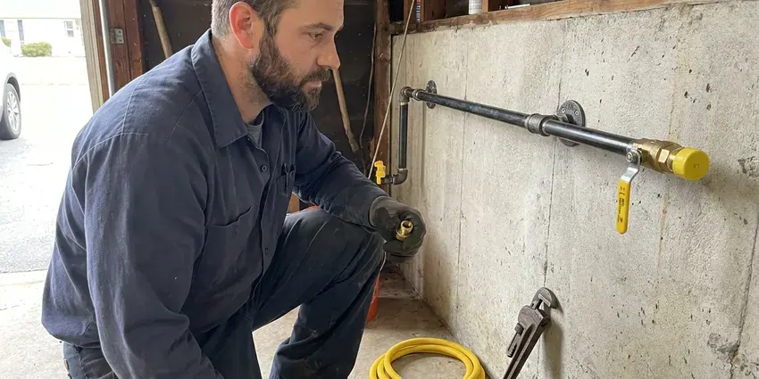
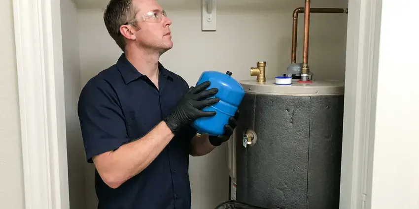

Water Heater Installation in Davenport, IA
KFR Plumbing installs gas, electric, tank and tankless water heaters across Davenport, IA, often the same day you call.
- Trusted Brands
- Permits and Code Compliance
- Licensed, Insured Plumbers
- Licensed Plumbers

Get hot water back quickly with a new water heater in Davenport, IA.
Don't shiver through another cold shower, contact us now for fast service.
Water Heater Installation and Replacement in Davenport, IA
KFR Plumbing installs new water heaters for homeowners who need a replacement, an upgrade or a first-time install. We handle tank and tankless models, gas and electric units and installations in garages, attics and closets.
Our expertise includes:
- Traditional tank and tankless water heater installation.
- Expert sizing for optimal hot water capacity.
- Secure gas and electrical connections for safety.

Additional Plumbing Installation Services in Davenport, IA
We install water heaters, pumps, lines, and fixtures across Davenport, IA with careful, permitted work that passes inspection the first time.




Gas Line Installation near Davenport

Customers
Why Choose KFR Plumbing for Water Heater Installation in Davenport, IA?
We help you choose the right size and type for your home. Then we install it cleanly and test it before we head out.
- Fast Service, Many installations are finished the same day you call.
- Quality Assurance, We only install high-quality water heater brands known for their durability and energy efficiency, ensuring long-lasting performance.
- Certified Pros, All our plumbers are licensed and insured, ensuring expert and safe installations.
Citywide Coverage
No matter where your home is located within Davenport, IA, KFR Plumbing is your local partner for professional water heater installation. We deliver consistent service quality across all communities, bringing reliable hot water right to your doorstep.
Experienced Team
Our team has experience with Rheem, A.O. Smith, Bradford White, Navien and Rinnai units. They know how to install each brand to factory specs.
Safety-First Approach
At KFR Plumbing, we prioritize safety above all else during water heater installation. We conduct thorough inspections, ensure proper venting for gas units and verify all electrical connections are secure. Our adherence to strict safety protocols and local Iowa regulations delivers a secure and worry-free installation for your Davenport home.
Trusted Certified Davenport Plumbing Services Professionals
At KFR Plumbing, we take pride in providing certified plumbing services throughout Davenport, IA. Backed by recognized industry credentials, our experienced plumbers combine technical skill with genuine customer care. Whether it is repair, installation, or maintenance, we follow strict safety and quality standards to deliver long-lasting results you can trust.
Call Us Now PHCC Plumbing Contractor Recognition
PHCC Plumbing Contractor Recognition Better Business Bureau (BBB) Accreditation
Better Business Bureau (BBB) Accreditation Angi Certified Pro
Angi Certified Pro ISO 9001 Quality Management Certification
ISO 9001 Quality Management CertificationEfficient Water Heater Installation Services in Davenport, IA
Hybrid Heat Pump Water Heater Installation in Davenport, IA
Hybrid heat pump water heaters pull heat from surrounding air, which can make them efficient in warm garages and utility rooms. We install models from Rheem and A.O. Smith with proper condensate drainage. These units need adequate air space and clearance. They may qualify for utility rebates or tax credits. We help you decide if a hybrid is right for your home.

Gas Water Heater Replacement in Davenport
Many homes in Davenport use natural gas for their water heaters due to its efficiency and low operating costs. When replacing a gas water heater, precise gas line connections, proper ventilation and carbon monoxide detection are critical. Our licensed plumbers are experienced with gas appliance installation, making sure every safety measure is met. We check for leaks, test the igniter and confirm proper exhaust, adhering to all local Iowa codes. You can trust us to safely and effectively install your new gas water heater, providing dependable hot water.
Gas Tank Water Heater Installation in Davenport
Gas tank water heaters provide strong recovery and are common in many local homes. We install 40, 50 and 75 gallon models with proper venting and combustion air. Each install includes a new gas connector, sediment trap and shutoff valve. We check draft and test for gas leaks. Gas units are a solid choice for families with high hot water demand.
Water Heater Installation Cost in Davenport, IA
Tank water heater installations usually cost less upfront than tankless systems. Gas tankless installs can cost more because of gas line upgrades and venting. Attic installs, relocations and code upgrades may add to the price. We provide a written quote that includes the unit, labor, permits and haul-away. We also compare long-term energy costs so you can make an educated choice.
Brand-Specific Water Heater Installation in Davenport
We are experienced in installing all major water heater brands, including Rheem, AO Smith, Bradford White and Navien. Our plumbers are familiar with the exact installation requirements and warranty terms for each manufacturer, ensuring your new unit is set up precisely to factory specifications for strong performance and longevity in your Davenport home.
Traditional Tank Water Heater Installation in Davenport
Most homes still rely on traditional tank water heaters for their hot water needs. These units store and heat a large volume of water, making them a reliable choice for families. Our installation service includes proper sizing based on your household's demand, providing adequate hot water even during peak usage. We handle all connections, including gas lines or electrical wiring, and confirm correct venting to meet Davenport safety codes. Our team also disposes of your old unit properly, making the process hassle-free for you.
Emergency Water Heater Replacement in Davenport, IA
A sudden water heater failure can be a major inconvenience, especially since hot water is essential year-round. If your water heater bursts, leaks badly or completely stops working, KFR Plumbing offers emergency replacement services in Davenport. We prioritize urgent installations to restore your hot water quickly and efficiently. Our plumbers arrive with the right tools and common replacement units, or we can source specific models fast. We aim to minimize damage and get your home back to normal with little delay, even if it's after hours.

Electric Tank Water Heater Installation in Davenport, IA
Electric tank water heaters are common in homes without natural gas service. We install models with the correct voltage and breaker size for your electrical panel. These units do not need venting, which allows more flexible placement. We also install a drain pan when the heater is in a closet or attic. Electric models are simple, reliable and quiet.
Water Heater Installation Near Me in Davenport, IA
When you need water heater installation near me, our local plumbers can be there fast. We stock popular models so most installs do not wait on special orders. Many customers have hot water again the same day.
When your hot water heater needs replacing, choosing a local contractor like KFR Plumbing means you get personalized service and plumbers familiar with Davenport plumbing. We're committed to being your trusted neighborhood provider for all your water heater installation needs.
KFR Plumbing at a Glance
- Licensed and insured plumbers serving Davenport, IA
- Same-day appointments and 24/7 emergency response
- Upfront, flat-rate pricing before work begins
- 4.8-star rated by 620+ Iowa customers
Davenport Map
Davenport Information
- Population
- 100,354
- Area codes
- 563/309/641
- Service area
- Davenport and communities within 40 miles
- Nearby
- Bettendorf, Iowa City, Marion, Cedar Rapids
Having a properly installed water heater is crucial for homes in Davenport, IA, where families need dependable hot water year-round for comfort and sanitation.
Expert Services
Trust our professionals for reliable KFR Plumbing solutions in Davenport, IA.
Our Specialized Plumbing Services in Davenport, IA
At KFR Plumbing, we provide a complete range of plumbing services across Davenport, IA. From leak detection to full system installations, our team ensures fast, precise, and affordable service for both residential and commercial properties. Explore our core services below:


How Our Water Heater Installation Process Works in Davenport, IA
Our water heater installation process at KFR Plumbing is designed to be simple and stress-free for our Davenport, IA customers.
Request a Quote
Call us at (515) 308-3583 to discuss your water heater needs and schedule an on-site assessment. We'll provide a transparent quote for the entire installation.
Site Assessment
Our plumber will visit your Davenport home to evaluate your current setup, discuss options and help you select the best water heater for your specific requirements.
Expert Installation
We handle the removal of your old unit and professional installation of the new one, including all necessary connections, venting and safety checks.
Frequently Asked Questions About Water Heater Installation in Davenport
The cost of water heater installation in Davenport, IA can range from $1,200 to $4,000 or more, depending on the type of unit (traditional tank vs. tankless), its capacity, fuel type (gas or electric) and any necessary plumbing or electrical upgrades. Tankless units usually have higher installation costs due to more complex venting and utility requirements. We provide a detailed, upfront quote after assessing your specific needs.
Rusty water, leaks around the base, rumbling noises and running out of hot water quickly are common signs. If your heater is over 10 years old, replacement is often the smart move.
Many tank water heaters last 8 to 12 years, though hard water can shorten that. Regular flushing and anode rod checks help lengthen life.
The typical lifespan of a traditional tank water heater is about 10 to 15 years, while tankless water heaters can last 20 years or more with proper maintenance. Factors like local water quality, maintenance frequency and usage habits can all influence the actual lifespan of your unit. Regular flushing can help extend its life.
While it might seem like a DIY project, water heater installation involves working with gas lines, high voltage electricity and water connections, all of which carry significant risks if not handled correctly. Improper installation can lead to leaks, gas explosions, electrical fires and carbon monoxide poisoning. It can also void your warranty, and local codes often require a licensed plumber for this work.
Many jurisdictions require a permit for water heater replacement. We pull permits when required and confirm the install meets code.
A traditional tank water heater usually lasts between 8 and 12 years with proper maintenance. Tankless water heaters often have a longer lifespan, ranging from 15 to 20 years, thanks to their durable components and on-demand operation.
We install Rheem, A.O. Smith, Bradford White, Navien, Rinnai and other trusted brands. We recommend models based on reliability, warranty and budget.
What People Are Saying About Our Plumbing Experts?

Sofia M.
Two new toilets installed in one visit, no mess left behind, and the tech even adjusted a faucet he noticed was dripping. Fair pricing and really friendly.
Toilet Installation · Dubuque, IA
Daniel K.
A pipe burst at 11 pm and they actually answered. The plumber showed up within the hour, shut everything down, and had us back to normal the next morning. Could not ask for more.
Emergency Plumbing · Bettendorf, IA
Patricia H.
We had a slab leak that two other companies could not find. KFR Plumbing located it in under an hour, explained our options, and the price matched the quote to the dollar.
Slab Leak Repair · Marion, IALaura S.
I scheduled a water heater replacement, and the team made the process smooth and affordable. The new unit works perfectly, and they cleaned up after completing the job.
Water Heater Replacement · Dubuque, IA
Emily R.
I called KFR Plumbing for plumbing repair, and the technician was fast, polite, and thorough. They explained the problem clearly and fixed it the same day. I will definitely hire them again. Highly recommended!
Plumbing Repair · Marion, IA
Robert G.
The trenchless sewer replacement saved our front yard. They walked us through the camera inspection footage first so we knew exactly what we were paying for.
Sewer Line Replacement · Davenport, IA